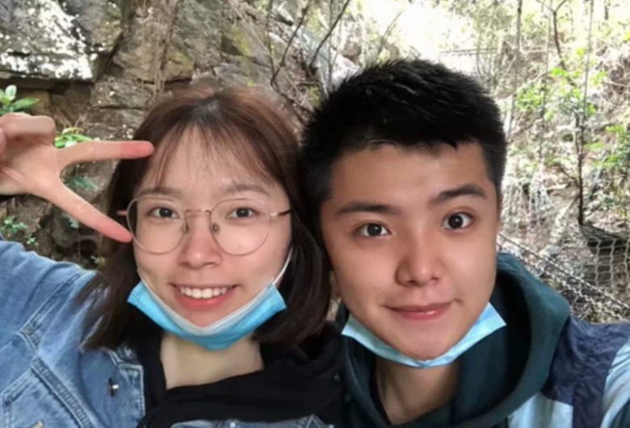
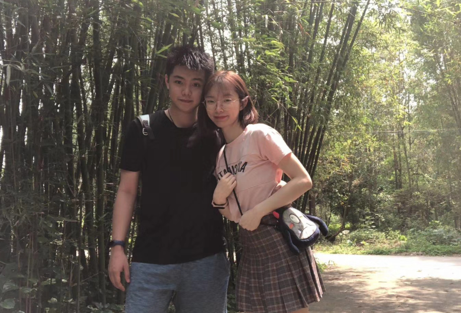

日记
游记
简历
首页
清远 牛鱼嘴
2020.4.24
和汝婷一起
去了期待已久的牛鱼嘴
鸟语花香
流水潺潺
连空气都是甜的
查看日记详情

清远 城市广场
2020.4.2
第一次真正的约会
在从小长大的地方
牵着她的手
吃着向往已久的美食
感到一阵幸福
查看日记详情
清远 北江边
2020.4.26
在傍晚
沐浴在夕阳的余温下
携手在江边漫步
时间像脚旁流动的水一般
在不知不觉中流逝
查看日记详情
清远 伦州岛
2020.4.30
4月30号，是我的生日
在这个特殊的日子
和汝婷一起踏上伦州岛
寻求生活的宁静
查看日记详情
